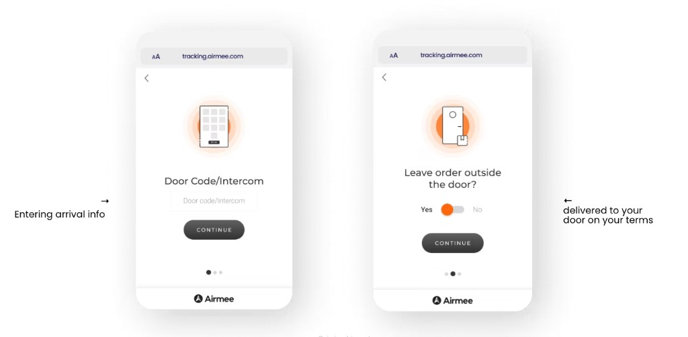
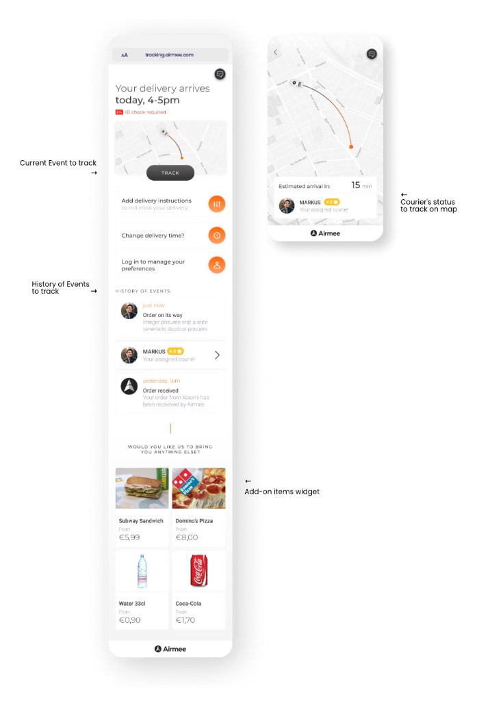
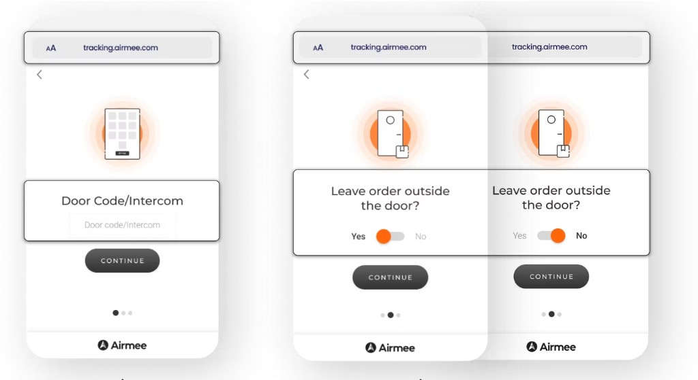
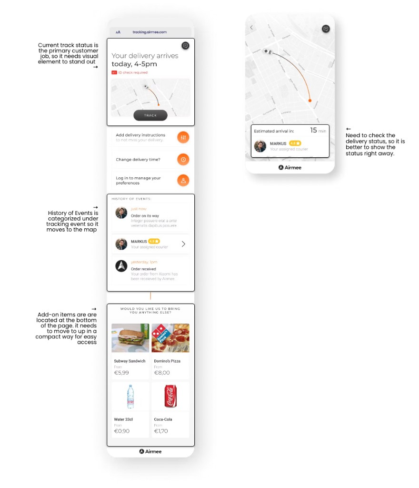
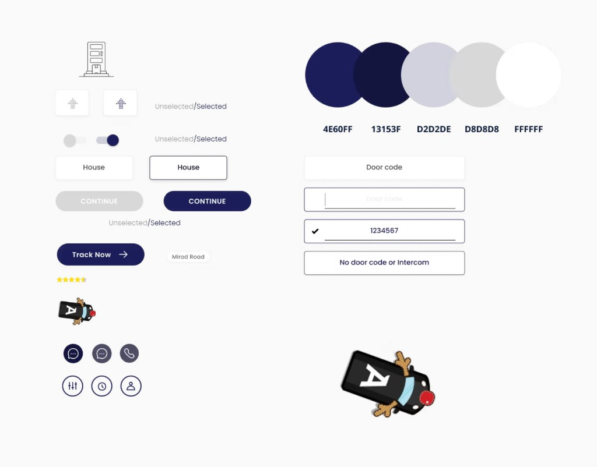

Have concise instruction
- Make the copy captivating and concise so recipients can accomplish to fill out
- Provides living types, questions follow depending on the choice.
- Make ‘continue’ button disable state unless they’d completed the job
Airmee
Redesign last-mile delivery on the customer’s terms
Define customer-side delivery problems, then improve CX structure and look for a clearer, calmer tracking experience.
Airmee is an AI-powered delivery platform for e-commerce and logistics businesses. It optimizes last-mile delivery with real-time, shortest-route planning. With over 10 million deliveries in 30+ cities across 3 countries, it supports hundreds of merchants with fast and reliable service.
Available on Tablet, Mobile (iOS, Android)
Designed visual solution and defined the holistic experience of Airmee’s last-mile delivery service. The main project was to redesign ‘Home Delivery Service’ that could verify accurate delivery information. I exclusively designed for last-mile deliveries and return, enabling predictable and flexible home delivery. So, it promises x time and y area delivery to recipients. To accomplish this product, I worked closely with a team of a product manager and two engineers.
For 12 weeks, I’ve worked on four different projects such as,
Providing recipients the ability to enter exact addresses and track items is a fundamental function of the Home delivery service since Airmee was founded. It was necessary to discover the opportunities and pain points when receiving personal information and reconsider the listing of the items displayed in the app while tracking.
Home delivery service had not provided recipients with enough input steps to fill the appropriate details to track. This made courier difficult to recognize the drop-off area at once, and made it impossible to guarantee when to receive or not. Plus, filling in the blanks with a lack of guidance would cause a problem.
Another problem was that the design itself was distractingly complex, because it was not prioritized based on information hierarchy on the tracking page nor visually standing out, which only added to the problem.


The most careful part of designing this feature was addressing the customer’s needs by getting accurate information without adding unnecessary steps. Using the customer information, concise and clear visual elements, I designed the steps to take it closer to our goals.
To ensure that the courier delivers to specific location where a customer wants, we conducted repeated usability tests based on the feedback from the couriers and customer service, demonstrating the importance of symbiotic user expertise.
Recipients had neither a chance to fill out the detail address nor received the item at available time points since there was a lack of detailed input steps when inquiring about the Home delivery service.
Recipients also pointed out that the copy of instruction would motivate them to fill out info. On top of the fact that it only asks the door code or intercom number.
We thought it was important to make the add-on items more accessible because we want to give many opportunities to add items while the courier is on the go.
Recipients said it is complicated on the tracking page after the order is picked up and it’s on the way by a courier. They want to be able to track immediately and check delivery status changing to see how long it takes. The information is less prioritized according to the information hierarchy to meet needs of users.
With all these findings, I definitely felt as though there was potential to solve this problem from a design perspective.

Door code / intercom
Delivery preference


I designed several drafts to reach a new design system for consistent visual quality throughout the pages. This newly added design system was handed off to front-end engineers for quicker change later.
Palette: #4E60FF #13153F #D2D2DE #D8D8D8 #FFFFFF
Final design
At that time, I’d focused and developed the consistency of design elements based on the hierarchy found from research while simplifying unnecessary steps to solve problems and achieve goals.